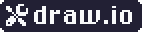
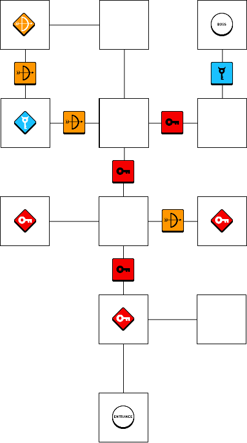

<section id="lostlegend" class="three">
					<div class="container">

						<!-- Title, Video, Description -->
						<header>
							<h2>Lost Legend</h2>
						</header>

						<div class="video-container-wrapper video-container-wrapperm-mobile">
							<div class="iframe-container">
								<iframe src="https://www.youtube-nocookie.com/embed/3BJuzzoToNs" frameborder="0" allowfullscreen="allowfullscreen"></iframe>
							</div>
						</div>

						<header>
							<strong>Lost Legend is a retro 2D action role-playing game with puzzle elements in a fantasy scenario. </strong>
						</header>

						<p><div align="justify">	
						<!--
						Inspired by 16 bit Super Nintendo games like Secret of Mana, Legend of Zelda and many others.
						As much as I love these old games, it was always my dream to make such a game with fast and smooth gameplay and modern game design.
						I developed this project completely on my own. This includes the programming, the graphics and the game design.
						-->
						This game was inspired by the 16-bit Super Nintendo games like Secret of Mana, Legend of Zelda and many others. 
						As much as I love these old games, it has always been my dream to redesign such a game with fast and smooth gameplay in a modern look.
						I developed this project completely on my own. This includes the programming, the graphics and the game design.

						</div></p>
                        <!-- About the Game -->
						<div class="row">
							<div class="col-8 col-12-mobile">
								<!--<article class="item">
									<a class="image fit"></a>
								</article> -->
								<video width="100%" autoplay loop muted>
									<source src="videos/ll_preview.mp4" type="video/mp4">
								</video>
							</div>
							<div class="col-4 col-12-mobile">
								<p> <b> Overview</b><br />
									Singleplayer, Action Adventure<br />
									<br />
									Made with:<br />
									<span class="image programm"></span>
								   <span class="image programm"></span>
								   <span class="image programm"></span>
								   <span class="image programm"></span>
								   <span class="image programm"></span>
								   <span class="image programm"></span>
								   </p>
								<footer>
									<a href="https://ghostbot.itch.io/lost-legend" class="button scrolly">Game Website</a>
								</footer>
							</div>
						</div>

						<footer></footer>

						<!-- About the Level Design -->
						<header>
							<h3>Lock and Key Level Design</h3>
						</header>

						<p>
						<div align="justify">		
						Watching the web series Bosskeys of the Youtube channel <a href="https://www.youtube.com/channel/UCqJ-Xo29CKyLTjn6z2XwYAw">GameMakers Toolkit</a>
						I learned a lot about non-linear level design in games like Zelda, Dark Souls, and Metroid.
						This helped me a lot in creating my level design.
						I took over the graph system from the creator Mark Brown for creating my own level graphs.
						
						
						Any smallkey <span class="image icon"></span> 
						is used to open any locked door <span class="image icon"></span>. 
						Each key object <span class="image icon"></span> 
						can be used to overcome many obstacles <span class="image icon"></span>. 
						And every boss key <span class="image icon"></span> 
						can be used to open exactly one boss door <span class="image icon"></span> .
						
						The example below shows a relatively simple layout for one level. 
						But with the system more complex levels are possible. 
						Since this system has helped me so much, I have developed it further, as you can see in my next project.
						</div>
						</p>

						<div class="row">		
							<div class="col-3 col-12-mobile">
								<p>Dependency Graph</p>
								<a class="image fit"></a>
							</div>
							<div class="col-3 col-12-mobile">
								<p>Dungeon Layout</p>
								<a class="image fit"></a>
							</div>
							<div class="col-6 col-12-mobile">	
								<p>The finished result in the level editor of Gamemaker Studio 2</p>
								<a class="image fit"></a>
							</div>
						</div>

					</div>
				</section>